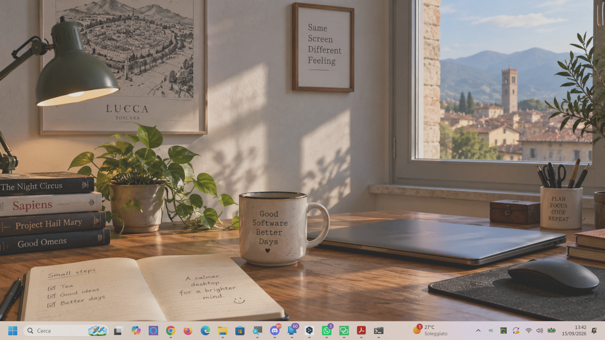
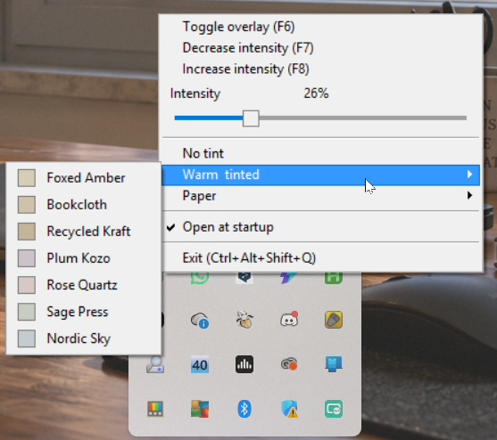

Paper grain
A subtle procedural surface applied across the desktop.
FREE · OPEN SOURCE · WINDOWS
GrainLayer places a subtle paper-grain surface over your Windows desktop. It stays out of the way, lets your mouse and keyboard pass through, and lives quietly in the system tray.

Without GrainLayer With GrainLayerModern displays are perfectly uniform, bright and glossy. GrainLayer adds a faint procedural grain over the desktop to give that surface a more tactile, paper-like character.
The effect is deliberately subtle. Adjust the intensity until you find the amount of texture that feels right for your screen.
Night Light and blue-light filters change your display's color temperature. GrainLayer takes a different approach: it overlays a textured surface.
A subtle procedural surface applied across the desktop.
The overlay stays out of the way of your normal mouse interaction.
Adjust the effect directly from the system-tray menu.
Paper-style and warm/tinted presets for different moods.
F6 toggles the overlay; F7 and F8 adjust intensity.
Your overlay state, intensity and tint are remembered automatically.
Choose a paper-style preset or add a little warmth and color from the tray menu.
A transparent click-through Win32 window sits above the desktop.
The surface is rendered into a 32-bit DIB with alpha-aware compositing.
The paper effect is generated rather than relying on a photographic texture.
Configuration stays in the tray, leaving the desktop itself unobstructed.

Toggle the overlay, change intensity, choose a preset, enable Windows startup or exit — all from the system tray.
F6 toggle F7 decrease F8 increase
GRAINLAYER FOR WINDOWS
Free, open source, native x64 Windows software.
MIT licensed · Windows 10+ · x64